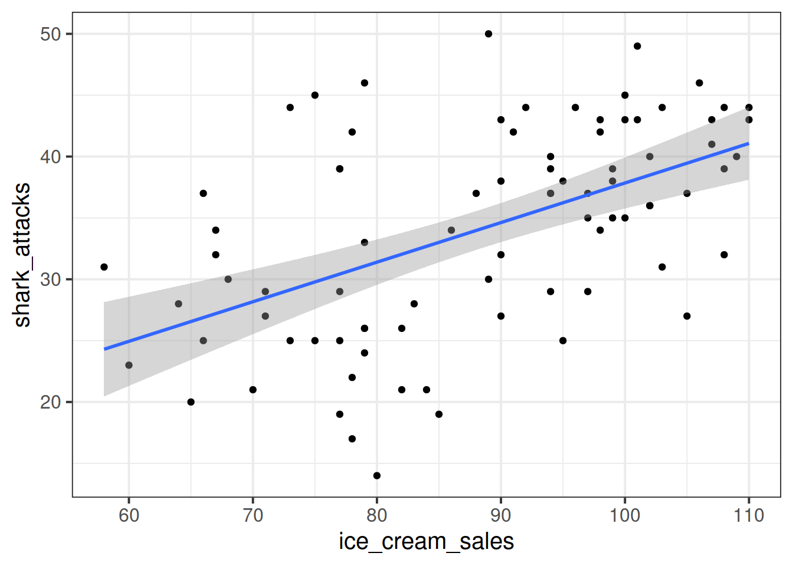
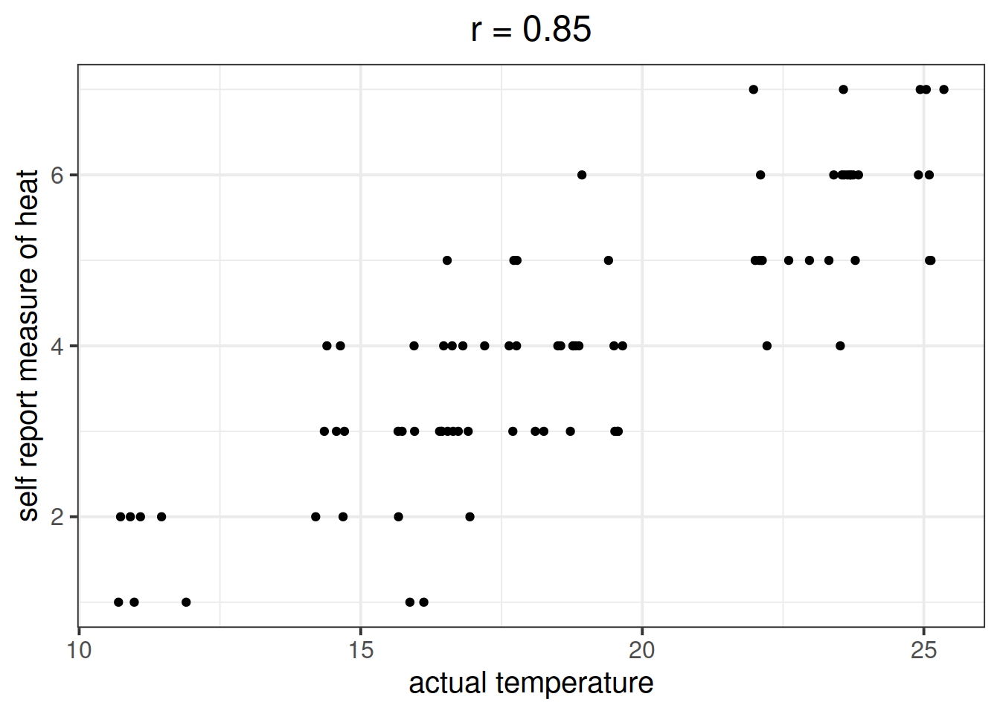

Model Fit, Comparison, and Selection
Be sure to check the solutions to last week’s exercises.
You can still ask any questions about previous weeks’ materials if things aren’t clear!
LEARNING OBJECTIVES
- Understand measures of model fit using \(R^2\) and F.
- Understand the principles of model selection and how to compare models via \(R^2\) and F tests.
- Understand AIC and BIC.
- Understand the basics of backward elimination, forward selection and stepwise regression.
Model Fit
Adjusted \(R^2\)
We know from our work on simple linear regression that the R-squared can be obtained as: \[ R^2 = \frac{SS_{Model}}{SS_{Total}} = 1 - \frac{SS_{Residual}}{SS_{Total}} \]
However, when we add more and more predictors into a multiple regression model, \(SS_{Residual}\) cannot increase, and may decrease by pure chance alone, even if the predictors are unrelated to the outcome variable. Because \(SS_{Total}\) is constant, the calculation \(1-\frac{SS_{Residual}}{SS_{Total}}\) will increase by chance alone.
An alternative, the Adjusted-\(R^2\), does not necessarily increase with the addition of more explanatory variables, by including a penalty according to the number of explanatory variables in the model. It is not by itself meaningful, but can be useful in determining what predictors to include in a model. \[ Adjusted{-}R^2=1-\frac{(1-R^2)(n-1)}{n-k-1} \\ \quad \\ \begin{align} & \text{Where:} \\ & n = \text{sample size} \\ & k = \text{number of explanatory variables} \\ \end{align} \]
In R, you can view the mutiple and adjusted \(R^2\) at the bottom of the output of summary(<modelname>):
Figure 1: Multiple regression output in R, summary.lm(). R-squared highlighted
F-ratio
As in simple linear regression, the F-ratio is used to test the null hypothesis that all regression slopes are zero.
It is called the F-ratio because it is the ratio of the how much of the variation is explained by the model (per paramater) versus how much of the variation is unexplained (per remaining degrees of freedom).
\[ F_{df_{model},df_{residual}} = \frac{MS_{Model}}{MS_{Residual}} = \frac{SS_{Model}/df_{Model}}{SS_{Residual}/df_{Residual}} \\ \quad \\ \begin{align} & \text{Where:} \\ & df_{model} = k \\ & df_{error} = n-k-1 \\ & n = \text{sample size} \\ & k = \text{number of explanatory variables} \\ \end{align} \]
In R, at the bottom of the output of summary(<modelname>), you can view the F ratio, along with an hypothesis test against the alternative hypothesis that the at least one of the coefficients \(\neq 0\) (under the null hypothesis that all coefficients = 0, the ratio of explained:unexplained variance should be approximately 1):
Figure 2: Multiple regression output in R, summary.lm(). F statistic highlighted
Run the code below. It reads in the wellbeing/rurality study data, and creates a new binary variable which specifies whether or not each participant lives in a rural location.
library(tidyverse)
mwdata2<-read_csv("https://uoepsy.github.io/data/wellbeing_rural.csv")
mwdata2 <-
mwdata2 %>% mutate(
isRural = ifelse(location=="rural","rural","notrural")
)Fit the following model, and assign it the name “wb_mdl1.”
- \(\text{Wellbeing} = \beta_0 + \beta_1 \cdot \text{Social Interactions} + \beta_2 \cdot \text{IsRural} + \epsilon\)
Does the model provide a better fit to the data than a model with no explanatory variables? (i.e., test against the alternative hypothesis that at least one of the explanatory variables significantly predicts wellbeing scores).
Model Comparison
Incremental F-test
If (and only if) two models are nested (one model contains all the predictors of the other and is fitted to the same data), we can compare them using an incremental F-test.
This is a formal test of whether the additional predictors provide a better fitting model.
Formally this is the test of:
- \(H_0:\) coefficients for the added/ommitted variables are all zero.
- \(H_1:\) at least one of the added/ommitted variables has a coefficient that is not zero.
The F-ratio for comparing the residual sums of squares between two models can be calculated as:
\[ F_{(df_R-df_F),df_F} = \frac{(SSR_R-SSR_F)/(df_R-df_F)}{SSR_F / df_F} \\ \quad \\ \begin{align} & \text{Where:} \\ & SSR_R = \text{residual sums of squares for the restricted model} \\ & SSR_F = \text{residual sums of squares for the full model} \\ & df_R = \text{residual degrees of freedom from the restricted model} \\ & df_F = \text{residual degrees of freedom from the full model} \\ \end{align} \]
In R, we can conduct an incremental F-test by constructing two models, and passing them to the anova() function: anova(model1, model2).
The F-ratio you see at the bottom of summary(model) is actually a comparison between two models: your model (with some explanatory variables in predicting \(y\)) and the null model. In regression, the null model can be thought of as the model in which all explanatory variables have zero regression coefficients. It is also referred to as the intercept-only model, because if all predictor variable coefficients are zero, then the only we are only estimating \(y\) via an intercept (which will be the mean - \(\bar y\)).
Use the code below to fit the null model.
Then, use the anova() function to perform a model comparison between your earlier model (wb_mdl1) and the null model.
Check that the F statistic is the same as that which is given at the bottom of summary(wb_mdl1).
null_model <- lm(wellbeing ~ 1, data = mwdata2)
Does weekly outdoor time explain a significant amount of variance in wellbeing scores over and above weekly social interactions and location (rural vs not-rural)?
Provide an answer to this question by fitting and comparing two models (one of them you may already have fitted in an earlier question).
Incremental validity - A caution
A common goal for researchers is to determine which variables matter (and which do not) in contributing to some outcome variable. A common approach to answer such questions is to consider whether some variable \(X\)’s contribution remains significant after controlling for variables \(Z\).
The reasoning:
- If our measure of \(X\) correlates significantly with outcome \(Y\) even when controlling for our measure of \(Z\), then \(X\) contributes to \(y\) over and above the contribution of \(Z\).
In multiple regression, we might fit the model \(Y = \beta_0 + \beta_1 \cdot X + \beta_2 \cdot Z + \epsilon\) and conclude that \(X\) is a useful predictor of \(Y\) over and above \(Z\) based on the estimate \(\hat \beta_1\), or via model comparison between that model and the model without \(Z\) as a predictor (\(Y = \beta_0 + \beta_1 \cdot X + \epsilon\)).
A Toy Example
Suppose we have monthly data over a seven year period which captures the number of shark attacks on swimmers each month, and the number of ice-creams sold by beach vendors each month.
Consider the relationship between the two:

We can fit the linear model and see a significant relationship between ice cream sales and shark attacks:
sharkdata <- read_csv("https://uoepsy.github.io/data/sharks.csv")
shark_mdl <- lm(shark_attacks ~ ice_cream_sales, data = sharkdata)
summary(shark_mdl)##
## Call:
## lm(formula = shark_attacks ~ ice_cream_sales, data = sharkdata)
##
## Residuals:
## Min 1Q Median 3Q Max
## -17.3945 -4.9268 0.5087 4.8152 15.7023
##
## Coefficients:
## Estimate Std. Error t value Pr(>|t|)
## (Intercept) 5.58835 5.19063 1.077 0.285
## ice_cream_sales 0.32258 0.05809 5.553 3.46e-07 ***
## ---
## Signif. codes: 0 '***' 0.001 '**' 0.01 '*' 0.05 '.' 0.1 ' ' 1
##
## Residual standard error: 7.245 on 81 degrees of freedom
## Multiple R-squared: 0.2757, Adjusted R-squared: 0.2668
## F-statistic: 30.84 on 1 and 81 DF, p-value: 3.461e-07Does the relationship between ice cream sales and shark attacks make sense? What might be missing from our model?
You might quite rightly suggest that this relationship is actually being driven by temperature - when it is hotter, there are more ice cream sales and there are more people swimming (hence more shark attacks).
Is \(X\) (the number of ice-cream sales) a useful predictor of \(Y\) (numbers of shark attacks) over and above \(Z\) (temperature)?
We might answer this with a multiple regression model including both temperature and ice cream sales as predictors of shark attacks:
shark_mdl2 <- lm(shark_attacks ~ ice_cream_sales + temperature, data = sharkdata)
summary(shark_mdl2)##
## Call:
## lm(formula = shark_attacks ~ ice_cream_sales + temperature, data = sharkdata)
##
## Residuals:
## Min 1Q Median 3Q Max
## -15.5359 -3.1353 0.1088 3.1064 17.2566
##
## Coefficients:
## Estimate Std. Error t value Pr(>|t|)
## (Intercept) 1.73422 4.27917 0.405 0.686
## ice_cream_sales 0.08588 0.05997 1.432 0.156
## temperature 1.31868 0.20457 6.446 8.04e-09 ***
## ---
## Signif. codes: 0 '***' 0.001 '**' 0.01 '*' 0.05 '.' 0.1 ' ' 1
##
## Residual standard error: 5.914 on 80 degrees of freedom
## Multiple R-squared: 0.5233, Adjusted R-squared: 0.5114
## F-statistic: 43.91 on 2 and 80 DF, p-value: 1.345e-13
What do you conclude?
It appears that numbers of ice cream sales is not a significant predictor of sharks attack numbers over and above the temperature.
However… In psychology, we can rarely observe and directly measure the constructs which we are interested in (for example, personality traits, intelligence, emotional states etc.). We rely instead on measurements of, e.g. behavioural tendencies, as a proxy for personality traits.
Let’s suppose that instead of including temperature in degrees celsius, we asked a set of people to self-report on a scale of 1 to 7 how hot it was that day. This measure should hopefully correlate well with the actual temperature, however, there will likely be some variation: 
Is \(X\) (the number of ice-cream sales) a useful predictor of \(Y\) (numbers of shark attacks) over and above \(Z\) (temperature - measured on our self-reported heat scale)?
shark_mdl2a <- lm(shark_attacks ~ ice_cream_sales + sr_heat, data = sharkdata)
summary(shark_mdl2a)##
## Call:
## lm(formula = shark_attacks ~ ice_cream_sales + sr_heat, data = sharkdata)
##
## Residuals:
## Min 1Q Median 3Q Max
## -12.4576 -3.7818 -0.0553 3.6712 15.2155
##
## Coefficients:
## Estimate Std. Error t value Pr(>|t|)
## (Intercept) 8.96066 4.37145 2.050 0.04366 *
## ice_cream_sales 0.14943 0.05643 2.648 0.00974 **
## sr_heat 2.96130 0.49276 6.010 5.24e-08 ***
## ---
## Signif. codes: 0 '***' 0.001 '**' 0.01 '*' 0.05 '.' 0.1 ' ' 1
##
## Residual standard error: 6.051 on 80 degrees of freedom
## Multiple R-squared: 0.501, Adjusted R-squared: 0.4885
## F-statistic: 40.16 on 2 and 80 DF, p-value: 8.394e-13
What do you conclude?
Moral of the story: be considerate of what exactly it is that you are measuring.
This example was adapted from Westfall and Yarkoni, 2020 which provides a much more extensive discussion of incremental validity and type 1 error rates.
AIC & BIC
We can also compare models using information criterion statistics, such as AIC and BIC. These combine information about the sample size, the number of model parameters and the residual sums of squares (\(SS_{residual}\)). Models do not need to be nested to be compared via AIC and BIC, but they need to have been fit to the same dataset.
For both of these fit indices, lower values are better, and both include a penalty for the number of predictors in the model, although BIC’s penalty is harsher:
\[ AIC = n\,\text{ln}\left( \frac{SS_{residual}}{n} \right) + 2k \\ \quad \\ BIC = n\,\text{ln}\left( \frac{SS_{residual}}{n} \right) + k\,\text{ln}(n) \\ \quad \\ \begin{align} & \text{Where:} \\ & SS_{residual} = \text{sum of squares residuals} \\ & n = \text{sample size} \\ & k = \text{number of explanatory variables} \\ & \text{ln} = \text{natural log function} \end{align} \]
In R, we can calculate AIC and BIC by using the AIC() and BIC() functions.
The code below fits 5 different models:
model1 <- lm(wellbeing ~ social_int + outdoor_time, data = mwdata2)
model2 <- lm(wellbeing ~ social_int + outdoor_time + age, data = mwdata2)
model3 <- lm(wellbeing ~ social_int + outdoor_time + routine, data = mwdata2)
model4 <- lm(wellbeing ~ social_int + outdoor_time + routine + age, data = mwdata2)
model5 <- lm(wellbeing ~ social_int + outdoor_time + routine + steps_k, data = mwdata2)For each of the below pairs of models, what methods are/are not available for us to use for comparison and why?
model1vsmodel2model2vsmodel3model1vsmodel4model3vsmodel5
Recall the data on Big 5 Personality traits, perceptions of social ranks, and depression and anxiety scale scores:
scs_study <- read_csv("https://uoepsy.github.io/data/scs_study.csv")
summary(scs_study)## zo zc ze za
## Min. :-2.81928 Min. :-3.21819 Min. :-3.00576 Min. :-2.94429
## 1st Qu.:-0.63089 1st Qu.:-0.66866 1st Qu.:-0.68895 1st Qu.:-0.69394
## Median : 0.08053 Median : 0.00257 Median :-0.04014 Median :-0.01854
## Mean : 0.09202 Mean : 0.01951 Mean : 0.00000 Mean : 0.00000
## 3rd Qu.: 0.80823 3rd Qu.: 0.71215 3rd Qu.: 0.67085 3rd Qu.: 0.72762
## Max. : 3.55034 Max. : 3.08015 Max. : 2.80010 Max. : 2.97010
## zn scs dass
## Min. :-1.4486 Min. :27.00 Min. :23.00
## 1st Qu.:-0.7994 1st Qu.:33.00 1st Qu.:41.00
## Median :-0.2059 Median :35.00 Median :44.00
## Mean : 0.0000 Mean :35.77 Mean :44.72
## 3rd Qu.: 0.5903 3rd Qu.:38.00 3rd Qu.:49.00
## Max. : 3.3491 Max. :54.00 Max. :68.00Research question
- Beyond neuroticism and its interaction with social comparison, do other personality traits predict symptoms of depression, anxiety and stress?
Construct and compare multiple regression models to answer this question. Remember to check that your models meet assumptions (for this exercises, a quick eyeball of the diagnostic plots will suffice. Were this an actual research project, you would want to provide a more thorough check, for instance conducting formal tests of the assumptions).
Although the solutions are available immediately for this question, we strongly advocate that you attempt it yourself before looking at them.

Extra Exercises: Model Selection
“Which predictors should I include in my model?”
As a rule of thumb, you should include as predictors your variables of interest (i.e., those required to answer your questions), and those which theory suggests you should take into account (for instance, if theory tells you that temperature is likely to influence the number of shark attacks on a given day, it would be remiss of you to not include it in your model).
However, in some specific situations, you may simply want to let the data tell you whatever there is to tell, without being guided by theory. This is where analysis becomes exploratory in nature (and therefore should not be used as confirmatory evidence in support of theory).
In both the design and the analysis of a study, you will have to make many many choices. Each one takes you a different way, and leads to a different set of choices. This idea has become widely known as the garden of forking paths, and has important consequences for your statistical inferences.
Out of all the possible paths you could have taken, some will end with what you consider to be a significant finding, and some you will simply see as dead ends. If you reach a dead-end, do you go back and try a different path? Why might this be a risky approach to statistical analyses?
For a given set of data, there will likely be some significant relationships between variables which are there simply by chance (recall that \(p<.05\) corresponds to a 1 in 20 chance - if we study 20 different relationships, we would expect one of them two be significant by chance). The more paths we try out, the more likely we are to find a significant relationship, even though it may actually be completely spurious!
Model selection is a means of answering the question “which predictors should I include in my model?” but it is a big maze of forking paths, which will result in keeping only those predictors which meet some criteria (e.g., significance).
Stepwise
Forward Selection
- Start with variable which has highest association with DV.
- Add the variable which most increases \(R^2\) out of all which remain.
- Continue until no variables improve \(R^2\).
Backward Elimination
- Start with all variables in the model.
- Remove the predictor with the highest p-value.
- Run the model again and repeat.
- Stop when all p-values for predictors are less than the a priori set critical level.
Note that we can have different criteria for selecting models in this stepwise approach, for instance, choosing the model with the biggest decrease in AIC.
Using the backward elimination approach, construct a final model to predict wellbeing scores using the mwdata2 dataset from above.
There are functions in R which automate the stepwise procedure for us.
step(<modelname>) will by default use backward elimination to choose the model with the lowest AIC.
- Using data on the Big 5 Personality traits, perceptions of social ranks, and depression and anxiety, fit the full model to predict DASS-21 scores.
- Use
step()to determine which predictors to keep in your model. - What predictors do you have in your final model?
Extra reading: Joshua Loftus’ Blog: Model selection bias invalidates significance tests